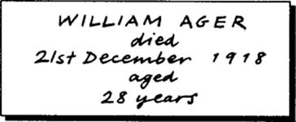
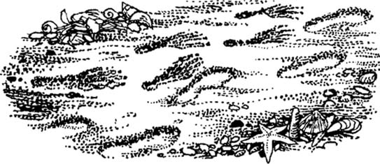

Listen to Part 1:
Seaburgh là một thị trấn nhỏ ven biển ở bờ biển phía đông nước Anh. Vùng này của nước Anh được gọi là Đông Anglia. Tôi tới Seaburgh để nghỉ mát vào năm 1919 với người bạn của tôi, Henry Long.
Năm đó có rất ít du khách ở Seaburgh. Khách sạn chúng tôi chỉ có một du khách khác. Tên anh ta là Paxton. Paxton là một chàng trai cao, gầy. Anh ta trông lo lắng và không vui.
Một buổi tối, khi Henry và tôi đang ngồi trong phòng chờ của khách sạn, Paxton tới chỗ chúng tôi.
‘Xin lỗi’, Paxton nói, ‘Tôi phải nói chuyện với ai đó. Có chuyện lạ lắm đã xảy ra với tôi. Tôi muốn được nói chuyện với ai đó về chuyện này. Tôi có thể nói chuyện với cả hai người không?’
‘Tất nhiên là được,’ tôi nói. ‘Xin mời ngồi xuống và kể cho chúng tôi nghe chuyện gì đã xảy ra.’
‘Vài ngày trước,’ Paxton nói, ‘tôi đi bộ tới Freston. Freston là một ngôi làng cách đây khoảng năm dặm. Tôi mang theo máy ảnh. Nhà thờ ở Freston có một cánh cửa lạ. Tôi muốn chụp ảnh nó. Có ba vương miện bằng gỗ trên cánh cửa.
‘Vị linh mục của ngôi làng đã ra khỏi nhà thờ. Tôi hỏi ông về ba vương miện trên cánh cửa. Vị linh mục kể cho tôi nghe một câu chuyện lạ.
‘Nhiều năm trước,’ Paxton kể, ‘Anglia là một vương quốc. Vị vua cuối cùng của Anglia đã mất cách đây hơn một ngàn năm. Khi ông mất, ba vương miện của ông đã biến mất. Người dân tin rằng những chiếc vương miện đó là bảo vật. Họ tin rằng những chiếc vương miện được chôn ở những nơi khác nhau. Những chiếc vương miện bảo vệ bờ biển khỏi kẻ thù từ bên kia biển.
‘Khoảng ba trăm năm trước, một trong những vương miện đã được tìm thấy. Nó đã được bán một cách bí mật – không ai biết chuyện gì đã xảy ra với nó sau đó.’
‘Còn hai chiếc vương miện kia thì sao?’ Henry hỏi.
Listen to Part 2:
‘Chiếc vương miện thứ hai đã bị cuốn trôi ra biển. Nó không bao giờ được tìm thấy nữa.
‘Còn chiếc vương miện thứ ba thì sao?’ Tôi hỏi Paxton. ‘Nó đã từng được tìm thấy chưa?’
‘Tôi sẽ kể cho các anh về vương miện đó,’ Paxton trả lời. ‘Có một gia đình ở đây tên là Ager. Người dân tin rằng gia đình Ager là người bảo vệ chiếc vương miện thứ ba. Người Ager cuối cùng đã mất cách đây một năm, vào năm 1918. Ông ta không có con. Tôi tìm thấy ngôi mộ của ông ta trong nghĩa trang – tôi đã chép lại những gì được khắc trên bia mộ.

‘Sau đó, tôi tới tiệm sách ở Freston. Tình cờ, tôi tìm thấy một cuốn sách cũ xuất bản năm 1740. Bên trong có một vài dòng thơ:
‘Nathaniel Ager là tên tôi,
Tôi sở hữu ngọn đồi trên bãi cát,
Nhiệm vụ của tất cả những người họ Ager đều giống nhau:
Là bảo vệ vương miện bảo vệ đất nước.
Khi tôi chết và nằm trong mộ,
Và tất cả xương cốt của tôi đã mục rữa,
Con trai tôi sẽ tiếp nối sự nghiệp của tôi:
Nó sẽ không bị lãng quên.’
‘Tôi mua cuốn sách và quay trở lại Seaburgh. Tôi tìm thấy ngôi nhà nơi William Ager đã sống. Ngôi nhà ở giữa đường từ Freston tới Seaburgh.
‘Có một ngọn đồi nhỏ phía trên ngôi nhà. Trên đỉnh đồi có một vòng tròn được tạo thành từ các gốc cây. Tôi biết rằng đây chính là nơi đó!’
‘Nơi đó để làm gì?’ Tôi hỏi. Henry và tôi bắt đầu cảm thấy mệt mỏi vì câu chuyện dài dòng này.
Listen to Part 3:
‘Nơi chôn vương miện,’ Paxton nói.
‘Và anh đã tìm thấy vương miện đó chưa?’ Tôi hỏi với giọng mệt mỏi.
Câu trả lời của Paxton khiến cả hai chúng tôi ngạc nhiên.
‘Tôi đang giữ vương miện trong phòng tôi,’ anh ta nói. ‘Hãy tới và xem đi, rồi các anh sẽ tin tôi.’
Henry và tôi không tin anh ta. Chúng tôi nghĩ rằng Paxton không nói thật. Nhưng chúng tôi đứng dậy và đi theo anh ta.
Paxton đưa chúng tôi tới phòng của anh ta. Anh ta mở một chiếc vali. Bên trong chiếc vali là một thứ gì đó được bọc trong giấy báo. Anh ta mở lớp giấy báo. Đó là một chiếc vương miện!
Chiếc vương miện được làm bằng bạc. Nó là một vòng tròn kim loại với bốn viên ngọc. Tôi đưa tay ra để chạm vào nó.
‘Đừng chạm vào!’ Paxton hét lên và giơ chiếc vương miện ra xa chúng tôi.
‘Tại sao không?’ Tôi hỏi với vẻ ngạc nhiên. ‘Chúng tôi sẽ không lấy nó khỏi anh đâu!’
‘Tôi xin lỗi,’ Paxton nói. ‘Bởi vì …’ Anh ta nhìn quanh phòng một cách kỳ lạ. ‘Kể từ khi tôi lấy vương miện, tôi đã không còn được ở một mình nữa.’
Listen to Part 4:
‘Anh không được ở một mình nữa?’ Henry hỏi. ‘Anh có ý gì?’
Sau đó, Paxton kể cho chúng tôi nghe thêm về câu chuyện của anh ta.
‘Sau khi tới nhà Ager, tôi đã trở lại đây. Tôi lấy một cái xẻng và một chiếc đèn lồng. Khi trời tối, tôi quay trở lại ngọn đồi phía trên ngôi nhà. Tôi bắt đầu đào một cái hố trên đỉnh đồi, ở giữa vòng tròn của những gốc cây.
‘Khi tôi đang đào,’ Paxton kể tiếp, ‘tôi chắc rằng có ai đó đang theo dõi tôi. Một lần, tôi nghĩ rằng tôi đã nhìn thấy ai đó. Nhưng tôi không chắc lắm. Người đó luôn đi phía sau tôi.
‘Một lần, tôi cảm thấy có ai đó đang kéo áo khoác của tôi. Nhưng sau đó tôi đã tìm thấy vương miện. Đúng lúc đó, tôi nghe thấy một tiếng kêu khủng khiếp phía sau mình.’
‘Ai đã kêu lên?’ Tôi hỏi.
‘Tôi không thấy ai cả,’ Paxton trả lời. ‘Nhưng tôi nghĩ tôi biết là ai.’ Anh ta chỉ vào một cuốn sách trên bàn cạnh giường. ‘Mỗi lần tôi trở về phòng, cuốn sách cũ lại được mở ra.’
Tôi nhìn vào chiếc bàn. Cuốn sách cũ được mở ở trang đầu tiên. Tôi thấy cái tên – William Ager 1890.
‘Vậy anh nghĩ rằng William Ager đang theo dõi anh?’ Tôi nói. ‘Nhưng William Ager đã chết.’
‘Đó là hồn ma của William Ager,’ Paxton nói. ‘Ông ta không để tôi được yên. Ông ta muốn lấy vương miện, nhưng ông ta không đủ mạnh để lấy nó khỏi tay tôi.
Listen to Part 5:
‘Và anh sẽ làm gì với vương miện?’ Tôi hỏi.
‘Tôi sẽ trả nó lại,’ Paxton nói.
‘Nếu anh trả lại, liệu hồn ma của William Ager có để anh được yên không?’ Tôi hỏi.
‘Tôi không biết,’ Paxton nói. ‘Nhưng tôi phải thử.’
Tôi thấy rằng Paxton rất, rất sợ hãi.
‘Vậy thì chúng tôi sẽ giúp anh trả lại nó tối nay,’ tôi nói.
Khi tôi nói xong, một cái bóng chạy ngang qua phòng. Paxton nhìn thấy và trông rất sợ hãi.
Tối đó, khi chúng tôi rời khỏi khách sạn, tôi nói chuyện với nhân viên giữ đồ của khách sạn.
‘Đêm nay trời ấm,’ tôi nói. ‘Chúng tôi ra ngoài đi bộ. Chúng tôi có thể sẽ về rất muộn.’
‘Tôi sẽ đợi ông, thưa ông,’ nhân viên giữ đồ nói. ‘Tôi sẽ không khóa cửa trước cho đến khi ông trở về. Người đàn ông kia không ở trong khách sạn, đúng không?’
Listen to Part 6:
‘Tôi nghe thấy một tiếng kêu khủng khiếp phía sau mình.’
‘Người đàn ông kia là ai?’ Tôi hỏi.
‘Người đàn ông đi cùng ông Paxton,’ nhân viên giữ đồ nói.
‘Không,’ tôi trả lời một cách nhanh chóng. Tôi không nói cho những người khác biết điều mà nhân viên giữ đồ đã nói. Nhưng tôi cũng đã nhìn thấy nó. Khi ba chúng tôi ở cùng nhau, tôi nghĩ rằng tôi đã nhìn thấy một người khác trong phòng cùng chúng tôi.
Chúng tôi mất nửa tiếng để đi bộ tới nhà của William Ager. Con đường đi dọc theo bãi biển. Bãi biển là một nơi cô đơn vào ban đêm.
Chúng tôi nhìn thấy ngọn đồi phía trên bãi biển. Biển lặng. Trăng đang chiếu sáng phía sau những thân cây trên đồi.
Chúng tôi leo lên đỉnh đồi. Chúng tôi đã quên mất không mang theo xẻng. Paxton không quan tâm. Anh ta bắt đầu đào bằng tay.
Ngay khi anh ta đào xong cái hố, Paxton đã đặt vương miện vào đó. Anh ta lấp đất lên vương miện.
‘Nó đã được chôn trở lại,’ anh ta nói với giọng lớn. ‘William Ager, giờ thì ông sẽ để tôi yên chứ?’
Listen to Part 7:
Chúng tôi không nghe thấy gì. Nhưng Paxton quay sang chúng tôi và nói, ‘William Ager nói – “Không bao giờ!”
Chúng tôi đưa Paxton trở lại khách sạn. Anh ta lặng lẽ đi bộ, nhìn xuống đất.
‘Đừng lo,’ tôi nói. ‘Ngày mai mọi chuyện sẽ ổn thôi. Chúng ta sẽ đưa anh lên tàu tới London. Ngay khi anh lên tàu, anh sẽ quên hết mọi chuyện này.’
‘Ông ta sẽ không bao giờ để tôi đi,’ Paxton nói.
‘Chúng ta đi ăn sáng nhé,’ anh ta nói. ‘Sau đó chúng ta sẽ đưa Paxton đến ga tàu.’
Tôi mặc quần áo và đi xuống cầu thang. Henry đang đợi tôi.
‘Anh có nhìn thấy Paxton chưa?’ Tôi hỏi Henry.
‘Anh ta không ở trong phòng,’ anh ta nói. ‘Tôi tưởng anh ta ở cùng anh!’
Chúng tôi nhanh chóng đi tới chỗ nhân viên giữ đồ.
‘Ông có thấy ông Paxton sáng nay không?’ Tôi hỏi.
Listen to Part 8:
‘Có, thưa ông,’ nhân viên giữ đồ nói. ‘Ông ấy ra ngoài vài phút trước. Thực ra, tôi tưởng ông ấy đi cùng ông, thưa ông.’
‘Cùng tôi ư?’ Tôi hỏi với vẻ ngạc nhiên.
‘Vâng, thưa ông,’ nhân viên giữ đồ nói. ‘Tôi tưởng ông đang đứng bên ngoài khách sạn, gọi ông ấy. Trông giống ông, thưa ông. Nhưng tôi đang đọc báo.
‘Hôm qua có chuyện lạ xảy ra ở Freston.’
‘Có chuyện gì xảy ra?’ Tôi hỏi.
‘Một ngôi mộ ở nhà thờ đã bị mở ra,’ nhân viên giữ đồ nói. ‘Xác chết đã biến mất.’
‘Ngôi mộ của ai bị mở ra vậy?’ Tôi hỏi.
‘Một người đàn ông từng sống ở đây,’ nhân viên giữ đồ trả lời. ‘Một người đàn ông kỳ lạ tên là William Ager.’
Henry và tôi chạy ra ngoài. Paxton đang ở trên bãi biển. Anh ta đang đi nhanh và vẫy tay với một ai đó. Chúng tôi không thể nhìn thấy anh ta đang vẫy tay với ai. Có một màn sương mù dày từ biển thổi vào.
Có những dấu chân khác trên cát. Chúng được tạo ra bởi một người không đi giày. Những dấu chân đó rất kỳ lạ. Chúng có hình dạng giống bàn chân. Nhưng đó là những bàn chân không có da thịt – chi có xương.
Listen to Part 9:
Chúng tôi dừng lại. Chúng tôi sợ hãi. Chúng tôi không muốn gặp thứ sinh vật mà Paxton đã gặp. Cả hai chúng tôi đều biết rằng Paxton đã chết.
Chúng tôi nghe thấy một tiếng cười lạ trong màn sương mù. Đó không phải là tiếng cười của một người sống. Henry và tôi rất kinh hoàng.
Henry và tôi đã không quay lại để tìm vương miện của Anglia. Vương miện vẫn an toàn. Chúng tôi không muốn gặp hồn ma của người bảo vệ – William Ager.
